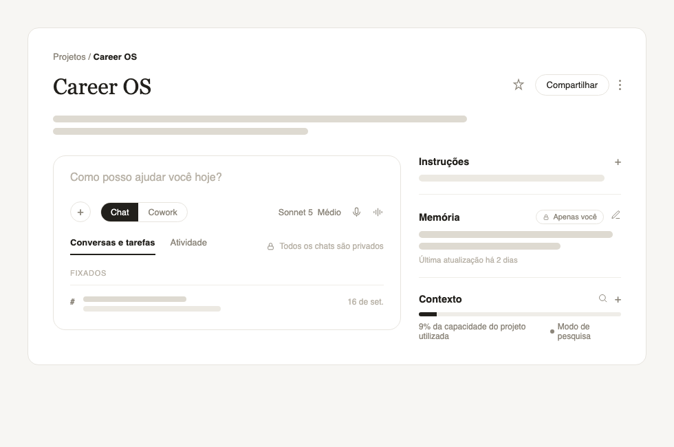
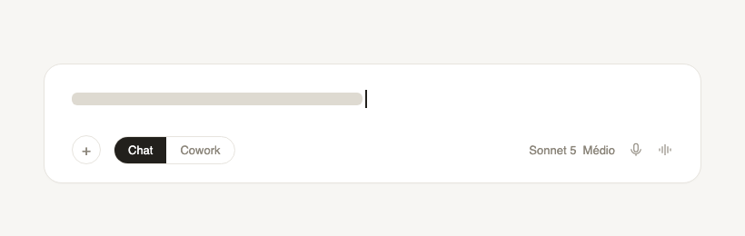
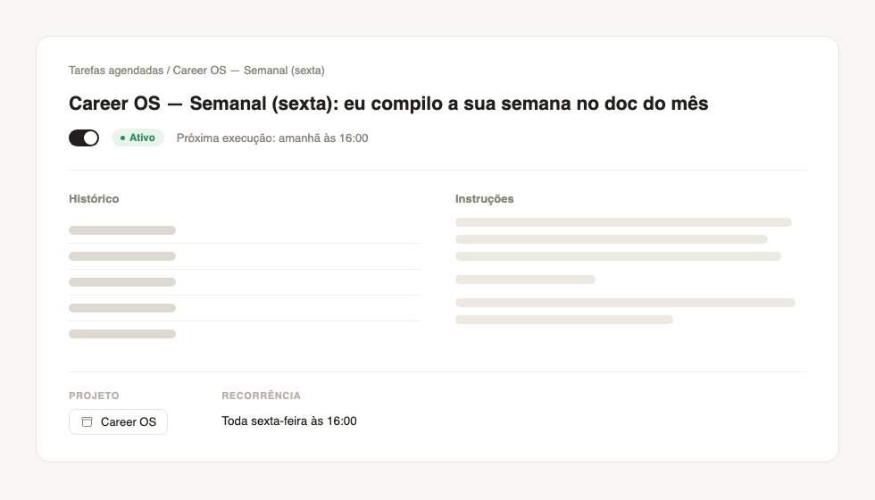
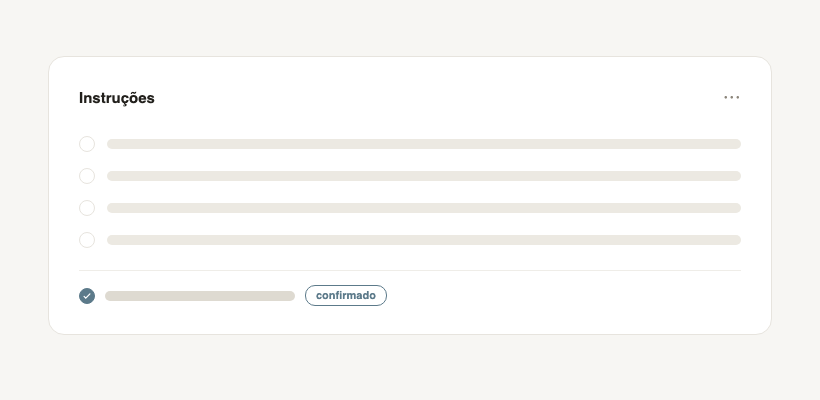
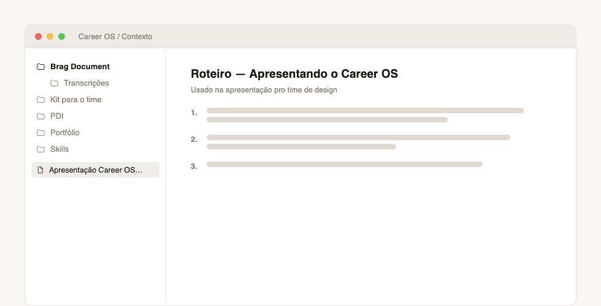

Applying design to my own career
A brag document that keeps itself alive, almost without me.

TL;DR
Good work tends to disappear: something important I did three months ago is easy to forget, for me and for whoever follows my career. A brag document is the obvious fix, but nobody keeps one. So I designed a system that holds itself up with the least possible effort from me.
I only capture raw lines, in about ten seconds. On Fridays the system scans my week, an honesty filter decides what counts as a win, and a monthly review turns it into a portfolio. A colleague installed it during my session with the design team.
Problem
The problem I actually had
Design work is easy to lose track of. Something important I did three months ago simply evaporates, for me and for whoever decides my career. Doing good work doesn't count if the people evaluating you never heard about it.
The obvious fix, keeping a brag document, has a fatal flaw: nobody keeps one. It takes effort, you forget, you abandon it in two weeks. The real problem wasn't writing a document. It was designing a system that held itself up with the least possible effort from me, honest enough that someone could actually trust it.
Challenges
- Maintenance: brag documents die from neglect, so capture had to cost seconds, not minutes.
- Honesty: an inflated document gets smelled out by leadership, so it had to separate a real, individual win from a group's contribution.
- Memory: relying on remembering is the failure point, so the system had to catch what I'd forget.
- Without turning into self-promotion: visibility, yes. Ego, no.
Goals
- Reduce my part of the work to a task that takes seconds.
- Automatically turn what I did into what changed because of it.
- Have an honest, organized record ready to bring to leadership, at any moment.
How it works
Capture is my only task
During the week, whenever something happens, I just drop a line, no polish, into a chat. Ten seconds. It's raw material, the refining comes later. Anything that demands more than that dies.

Friday's scan does the heavy lifting
Every Friday, on its own, the system reads what I dropped and scans my actual week: emails, messages, meetings, transcripts. It turns each thing into problem, what I found, what changed, connects it to the competencies I want to grow, and sends me a summary. Even when I forget to write something down, it catches what slipped by. It's a safety net, not just a form.

The filter is what keeps it honest
Every item goes through an honest test: did this really happen, with a clear source? Was it me, or the group? Did it actually change something? Was the recognition about my work? Is the scale honest? Whatever fails doesn't become a win. An honest document is what makes leadership trust it, inflating it destroys the asset.

The monthly review turns into a portfolio
Once a month the system steps back: it flags blind spots (zero facilitation this month, for instance) and curates a clean Impact Portfolio, organized by competency, ready to show. There's also a “to make visible” list: good work I did but haven't shown yet, because invisible work doesn't count.

Impact
For myself first. I gained clarity and visibility into what I actually do. I walked into 1:1s and checkpoints with concrete material instead of a vague sense that I'd done well. Five minutes of capture a week sustains the whole system.
Then I tested it with the design team. I presented the system in a live session. One colleague installed Career OS on the spot, during the session itself, and said afterward it was one of the most productive hours of her month. Another colleague called the idea brilliant, especially the part of the filter that blocks self-promotion disguised as achievement.
The idea to scale it, a post for the team's substack, taking it beyond design, came from the team itself. I didn't push for it. This isn't closed adoption: the colleague's install is still a trial, and the ideas to expand haven't become a decision. But it's no longer just a tool I use. It's a system someone else could run on her own, and she validated it as useful for her own version of the problem too.
In retrospect
The risk I watch for is the system becoming self-referential: a lot of polish in the process, little result showing outward. The session with the team was already a first test of that, it worked outside my own head, with someone else installing it. The next step is watching whether the colleague keeps using it once the novelty wears off, and whether the ideas to expand actually happen. If they do, this stops being a side project and becomes a team initiative.
This project is my own thesis applied to myself: turning ambiguity into clarity, as a system. The ambiguity of my own career became a flow with rules, a filter, and a clean output.
Want to see the system from the inside, the routine, the filter, the portfolio it produces? I'll walk you through it on request.
A personal, independent project. Colleagues are referenced anonymously.